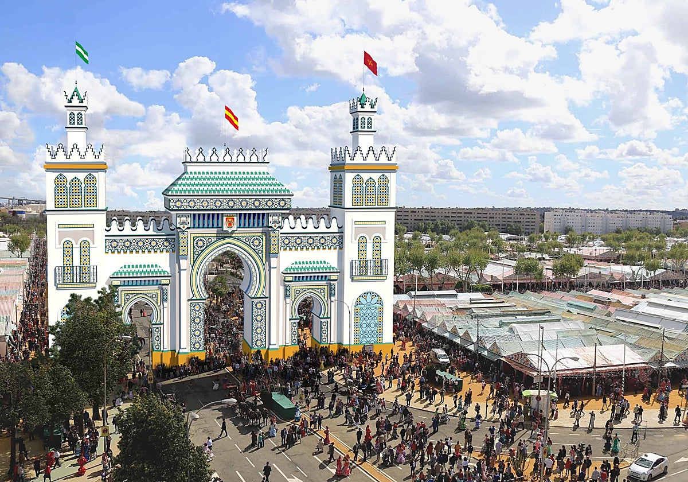
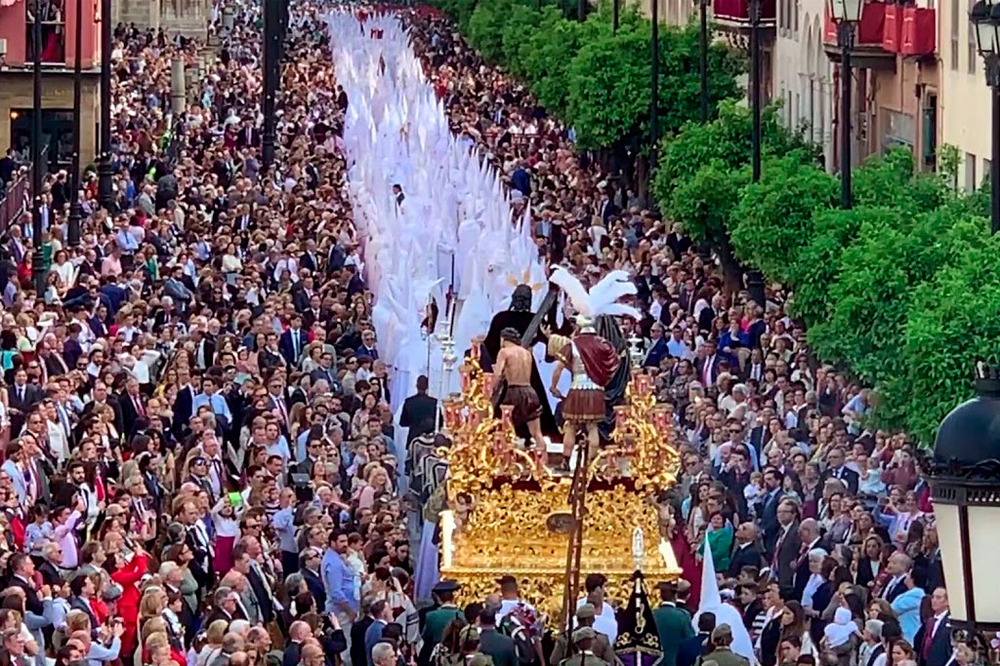
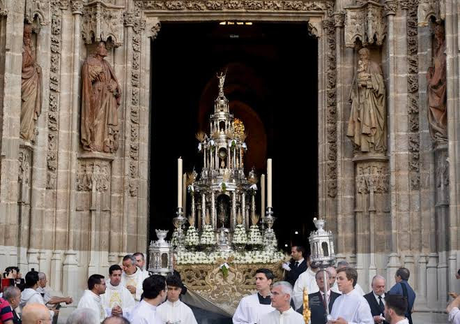

Sevilla es mundialmente conocida por la intensidad y la belleza de sus celebraciones populares. A continuación se presentan tres de sus fiestas más señaladas.
Feria de Abril Se celebra una o dos semanas después de Semana Santa en el Real de la Feria. Es una explosión de color, música, baile flamenco, trajes de faralaes y caballos engalanados. |
Semana Santa Declarada de Interés Turístico Internacional, las cofradías recorren las calles sevillanas portando sus pasos entre saetas, incienso y el recogimiento del pueblo. |
Corpus Christi La Corpus es la fiesta grande de la ciudad. La procesión del Santísimo recorre las calles engalanadas con altares, música y la participación de los gigantes y cabezudos. |